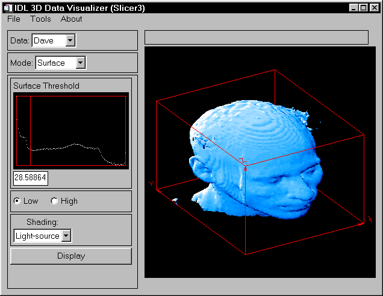
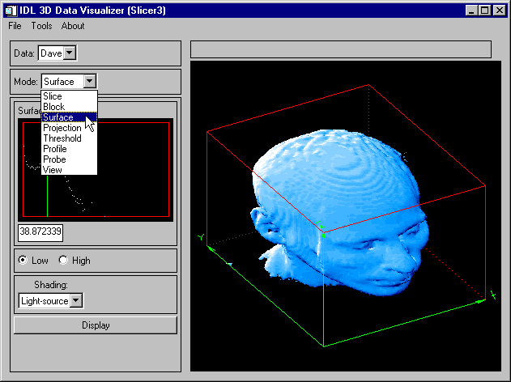
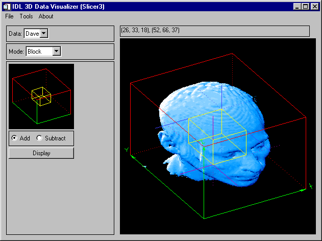
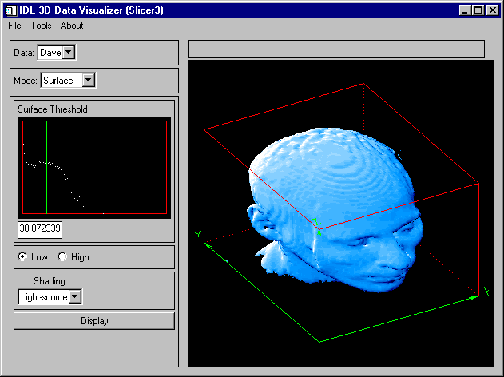
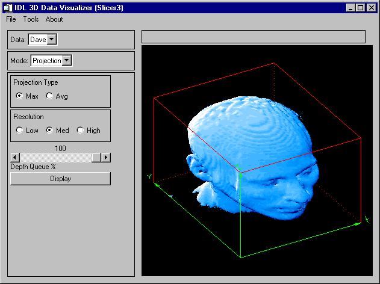
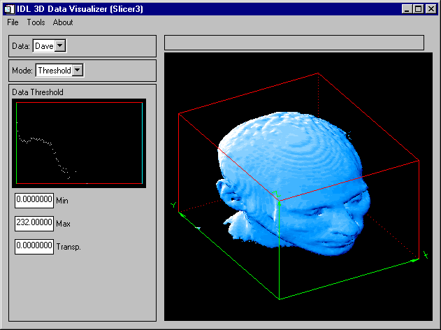
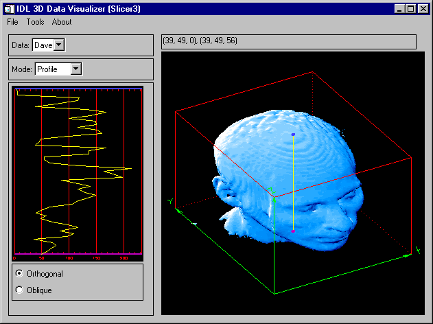
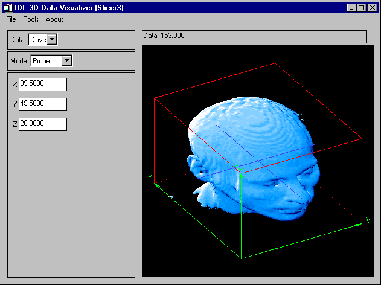
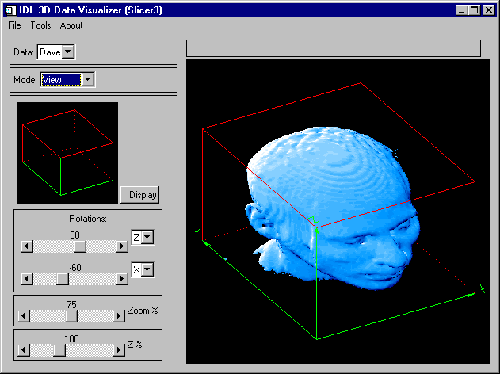

Syntax | Arguments | Keywords | Examples | Version History | See Also
The IDL SLICER3 is a widget-based application to visualize three-dimensional datasets. This program supersedes the SLICER program.
This routine is written in the IDL language. Its source code can be found in the file slicer3.pro in the lib subdirectory of the IDL distribution.
SLICER3 [, hData3D ] [, DATA_NAMES = string/string_array ] [, / DETACH ] [, GROUP_LEADER = widget_id ] [, / MODAL ]
A pointer to a three-dimensional data array, or an array of pointers to multiple three-dimensional arrays. If multiple arrays are specified, they all must have the same X, Y, and Z dimensions. If hData3D is not specified, SLICER3 creates a 2 x 2 x 2 array of byte data using the IDL BYTARR function. You can also load data interactively via the File menu of the SLICER3 application (see Examples for details).
Note: If data are loaded in this fashion, any data passed to SLICER3 via a pointer (or pointers) is deleted, and the pointers become invalid.
Set this keyword equal to a string array of names for the data. The names appear on the droplist widget for the current data. If the number of elements of DATA_NAMES is less than the number of elements in hData3D then default names will be generated for the unnamed data.
Set this keyword to place the drawing area in a window that is detached from the SLICER3 control panel. The drawing area can only be detached if SLICER3 is not run as a modal application.
Set this keyword equal to the Widget ID of an existing widget that serves as the “group leader” for the SLICER3 graphical user interface. When a group leader is destroyed, all widgets in the group are also destroyed. If SLICER3 is started from a widget application, then GROUP_LEADER should always be specified.
Set this keyword to block user interaction with all other widgets (and block the command line) until the SLICER3 exits. If SLICER3 is started from some other widget-based application, then it is usually advisable to run SLICER3 with the MODAL keyword set.
Note: SLICER3 modifies the current color table, as well as various elements of the plotting system (i.e., the “!X”, “!Y”, “!Z”, and “!P” system variables). If the MODAL keyword is set (recommended), then SLICER3 will, upon exit, restore these system variables (and the color tables) to the values they had when SLICER3 was started.
|
 |
The following options are available via SLICER3’s graphical user interface.
Select this menu option to choose a file containing a 3-D array (or arrays) to load into SLICER3. The file must have been written in the format specified in the following table. For each data array in the file, the following values must be included.
Note that the first six values are returned by the IDL SIZE function; see Examples for an example of how to create a data file suitable for SLICER3 with just a few IDL commands.
|
Data item |
Data Type |
Number of Bytes |
|
Number of dimension in array. Note: This is always 3 for valid SLICER3 data. |
long |
4 |
|
Size of first dimension. |
long |
4 |
|
Size of second dimension. |
long |
4 |
|
Size of third dimension. |
long |
4 |
|
Data type (Must be type 1 through 5.) |
long |
4 |
|
Total number of elements (dimX, dimY, dimZ). |
long |
4 |
|
Number of characters in data name. (See STRLEN for the easiest
|
long |
4 |
|
Data name |
byte |
strlen() |
|
3-D data array. |
varies |
varies |
If multiple arrays are present in the file, they must all have the same dimensions.
Note: Files saved by the “Save Subset” operation (see below) are suitable for input via the “Load” operation.
Data files that are moved from one platform to another may not load as expected, due to byte ordering differences. See the BYTEORDER and SWAP_ENDIAN for details.
SLICER3 must be in BLOCK mode to for this option to be available.
Select this menu option to save a subset of the 3-D data enclosed in the current block to the specified file. Subsets saved in this fashion are suitable for loading via the “Load” menu option. If multiple 3-D arrays are available when this option is selected, multiple subsets are saved to the file.
Select this menu option to save the contents of the current SLICER3 image window as a TIFF image in the specified file. When running in 8-bit mode, a “Class P” palette color TIFF file is created. In 24-bit mode, a “Class R” (interleaved by image) TIFF file is created.
Select this menu option to exit SLICER3.
Select this menu option to erase the display window and delete all the objects in the display list.
As graphical objects are created, they are added to the display list. Select this menu option to delete a specific object from the list. When an object is deleted, the screen is redrawn with the remaining objects.
Select this menu option to restore the original color scheme.
Use this menu option to change the percentage of differential shading applied to the X, Y, and Z slices.
Use this menu option to launch the XLOADCT application to modify the colors used for slices and blocks
Use this menu option to launch the XLOADCT application to modify the colors used for isosurfaces.
Use this menu option to launch the XLOADCT application to modify the colors used for projections.
Note: On some platforms, the selected colors may not become visible until after you exit the “XLOADCT” application.
Select this menu option to display a panel that allows you to set:
The axis visibility.
The wire-frame cube visibility.
The display window size.
Select this menu item to display a text file containing information about SLICER3.
Operations available in the Main Draw Window are dependent on the mode selected in the Mode pulldown menu. In general, when coordinate input is required from the user, it is performed by clicking a mouse button on the “surface” of the wire-frame cube that surrounds the data. This 3-D location is then used as the basis for whatever input is needed. In most cases, the “front” side of the cube is used. In a few cases, the coordinate input is on the “back” side of the cube.
If multiple datasets are currently available in SLICER3, this menu allows you to select which data will be displayed in the Main Draw Window. Slices, blocks, iso-surfaces, etc. are created from the currently selected data. If only one dataset is loaded, this menu is inactive.
This menu is used to select the current mode of operation.
|
 |
To display a slice, click and drag the left mouse button on the wire-frame cube. When the button is released, a slice through the data will be drawn at that location.
When in Draw mode, new slices will be merged into the current Z-buffer contents.
When in Expose mode, new slices will be drawn in front of everything else.
When in Orthogonal mode, use the left mouse button in the main draw window to position and draw an orthogonal slicing plane. Clicking the right mouse button in the main draw window (or any mouse button in the small window) will toggle the slicing plane orientation.
X: This sets the orthogonal slicing plane orientation to be perpendicular to the X axis.
Y: This sets the orthogonal slicing plane orientation to be perpendicular to the Y axis.
Z: This sets the orthogonal slicing plane orientation to be perpendicular to the Z axis.
Clicking any mouse button in the small window will reset the oblique slicing plane to its default orientation.
When in this mode, click and drag the left mouse button in the big window to set the surface normal for the oblique slicing plane.
When in this mode, click and drag the left mouse button in the big window to set the center point for the surface normal.
Clicking this button will cause an oblique slicing plane to be drawn.
|
 |
When in Block mode, use the left mouse button in the main draw window to set the location for the “purple” corner of the block. Use the right mouse button to locate the opposite “blue” corner of the block. When in Block mode, the “Save Subset” operation under the main “File” menu is available.
When in this mode, the block will be “added” to the current Z-buffer contents.
When in this mode, the block will be “subtracted” from the current Z-buffer contents. Subtract mode is only effective when the block intersects some other object in the display (such as an iso-surface).
Clicking this button will cause the block to be drawn.
|
 |
An iso-surface is like a contour line on a contour map. On one side of the line, the elevation is higher than the contour level, and on the other side of the line, the elevation is lower than the contour level. An iso-surface, however, is a 3-D surface that passes through the data such that the data values on one side of the surface are higher than the threshold value, and on the other side of the surface, the data values are lower than the threshold value.
When in Surface mode, a logarithmic histogram plot of the data is displayed in the small draw window. Click and drag a mouse button on this plot to set the iso-surface threshold value. This value is also shown in the text widget below the plot. The threshold value may also be set by typing a new value in this text widget. The histogram plot is affected by the current threshold settings. (See Threshold mode, below).
Selecting this mode will cause the iso-surface polygon facing to face towards the lower data values. Usually, this is the mode to use when the iso-surface is desired to surround high data values.
Selecting this mode will cause the iso-surface polygon facing to face towards the higher data values. Usually, this is the mode to use when the iso-surface is desired to surround low data values.
Iso-surfaces are normally rendered with light-source shading. If multiple datasets are currently loaded, then this menu allows the selection of a different 3-D array for the source of the iso-surface shading values. If only one dataset is currently loaded, then this menu is inactive.
Clicking this button will cause the iso-surface to be created and drawn. Iso-surfaces often consist of tens of thousands of polygons, and can sometimes take considerable time to create and render.
|
 |
A “voxel” projection of a 3-D array is the projection of the data values within that array onto a viewing plane. This is similar to taking an X-ray image of a 3-D object.
Select this mode for a Maximum intensity projection.
Select this mode for an Average intensity projection.
Select this mode for a Low resolution projection.
Select this mode for a Medium resolution projection.
Select this mode for a High resolution projection.
Use the slider to set the depth queue percent. A value of 50, for example, indicates that the farthest part of the projection will be 50% as bright as the closest part of the projection.
Clicking this button will cause the projection to be calculated and drawn. Projections can sometimes take considerable time to display. Higher resolution projections take more computation time.
|
 |
When in Threshold mode, a logarithmic histogram plot of the data is displayed in the small draw window. Click and drag the left mouse button on this plot to set the minimum and maximum threshold values. To expand a narrow range of data values into the full range of available colors, set the threshold range before displaying slices, blocks, or projections. The threshold settings also affect the histogram plot in “Surface” mode. The minimum and maximum threshold values are also shown in the text widgets below the histogram plot.
Click and drag the right mouse button on the histogram plot to set the transparency threshold. Portions of any slice, block, or projection that are less than the transparency value are not drawn (clear). Iso-surfaces are not affected by the transparency threshold. The transparency threshold value is also shown in a text widget below the histogram plot.
In this text widget, a minimum threshold value can be entered.
In this text widget, a maximum threshold value can be entered.
In this text widget, a transparency threshold value can be entered.
|
 |
In Profile mode, a plot is displayed showing the data values along a line. This line is also shown superimposed on the data in the main draw window. The bottom of the plot corresponds to the “purple” end of the line, and the top of the plot corresponds to the “blue” end of the line.
Click and drag the left mouse button to position the profile line, based upon a point on the “front” faces of the wire-frame cube. Click and drag the right mouse button to position the profile line, based upon a point on the “back” faces of the wire-frame cube. As the profile line is moved, The profile plot is dynamically updated.
Click and drag the left mouse button to position the “purple” end of the profile line on one of the “front” faces of the wire-frame cube. Click and drag the right mouse button to position the “blue” end of the profile line on one of the “back” faces of the wire-frame cube. As the profile line is moved, The profile plot is dynamically updated.
|
 |
In Probe mode, click and drag a mouse button over an object in the main draw window. The actual X-Y-Z location within the data volume is displayed in the three text widgets. Also, the data value at that 3-D location is displayed in the status window, above the main draw window. If the cursor is inside the wire-frame cube, but not on any object, then the status window displays “No data value”, and the three text widgets are empty. If the cursor is outside the wire-frame cube, then the status window and text widgets are empty.
Use this text widget to enter the X coordinate for the probe.
Use this text widget to enter the Y coordinate for the probe.
Use this text widget to enter the Z coordinate for the probe.
|
 |
In view mode, a small window shows the orientation of the data cube in the current view. As view parameters are changed, this window is dynamically updated. The main draw window is then updated when the user clicks on “Display”, or exits View mode.
Clicking on this button will cause the objects in the main view window to be drawn in the new view. If any view parameters have been changed since the last time the main view was updated, the main view will be automatically redrawn when the user exits View mode.
Use this slider to set the angle of the first view rotation (in degrees). The droplist widget adjacent to the slider indicates which axis this rotation is about.
Use this slider to set the angle of the second view rotation (in degrees). The droplist widget adjacent to the slider indicates which axis this rotation is about.
Use this slider to set the zoom factor percent. Depending upon the view rotations, SLICER3 may override this setting to ensure that all eight corners of the data cube are within the window.
Use this slider to set a scale factor for the Z axis (to compensate for the data’s aspect ratio).
The SLICER3 procedure has the following side effects:
SLICER3 sets the position for the light source and enables back-facing polygons to be drawn (see the IDL “SET_SHADING” command).
SLICER3 overwrites the existing contents of the Z-buffer. Upon exiting SLICER3, the Z-buffer contents are the same as what was last displayed by SLICER3.
On 24-bit displays, SLICER3 sets the device to non-decomposed color mode (DEVICE, DECOMPOSED=0).
SLICER3 overwrites the existing color table. Upon exiting SLICER3, the color table (as displayed in another window, such as PLOT) is the same as what was last displayed by SLICER3.
On 24-bit displays, you can often improve performance by running SLICER3 in 8-bit mode. This can be accomplished (on some platforms) by entering the following command at the start of the IDL session (before any windows are created):
Device, Pseudo_Color=8
The following IDL commands open a data file from the IDL distribution and load it into SLICER3:
; Choose a data file:
file=FILEPATH('head.dat', SUBDIR=['examples', 'data'])
; Open the data file:
OPENR, UNIT, file, /GET_LUN
; Create an array to hold the data:
data = BYTARR(80, 100, 57, /NOZERO)
; Read the data into the array:
READU, UNIT, data
; Close the data file:
CLOSE, UNIT
; Create a pointer to the data array:
hData = PTR_NEW(data, /NO_COPY)
; Load the data into SLICER3:
SLICER3, hdata, DATA_NAMES='Dave'
Note:
If data are loaded via the File menu after SLICER3 is launched with a pointer argument (as shown above), the pointer becomes invalid. You can use an IDL statement like the following to “clean up” after calling SLICER3 in this fashion:
if PTR_VALID(hdata) then PTR_FREE, hdata
Because we did not launch SLICER3 with the MODAL keyword, the last contents of the main draw window still reside in IDL’s Z-buffer. To retrieve this image after exiting SLICER3, use the following IDL statements:
; Save the current graphics device:
current_device = !D.Name
; Change to the Z-buffer device:
SET_PLOT, 'Z'
; Read the image from the Z-buffer:
image_buffer = TVRD()
; Return to the original graphics device:
SET_PLOT, current_device
; Display the image:
TV, image_buffer
The following IDL commands manually create a data save file suitable for dynamic loading into SLICER3. Note that if you load data into SLICER3 as shown above, you can also create save files by switching to BLOCK mode and using the Save Subset menu option.
; Store some 3-D data in a variable called data_1:
data_1 = INDGEN(20,30,40)
; Store some 3-D data in a variable called data_2:
data_2 = FINDGEN(20,30,40)
; Define the names for the datasets. Their names will appear in the
; "Data" pulldown menu in SLICER3:
data_1_name ='Test Data 1'
data_2_name ='Data 2'
; Select a data file name:
dataFile = DIALOG_PICKFILE()
; Write the file:
GET_LUN, lun
OPENW, lun, dataFile
WRITEU, lun, SIZE(data_1)
WRITEU, lun, STRLEN(data_1_name)
WRITEU, lun, BYTE(data_1_name)
WRITEU, lun, data_1
WRITEU, lun, SIZE(data_2)
WRITEU, lun, STRLEN(data_2_name)
WRITEU, lun, BYTE(data_2_name)
WRITEU, lun, data_2
CLOSE, lun
FREE_LUN, lun
|
5.0 |
Introduced |